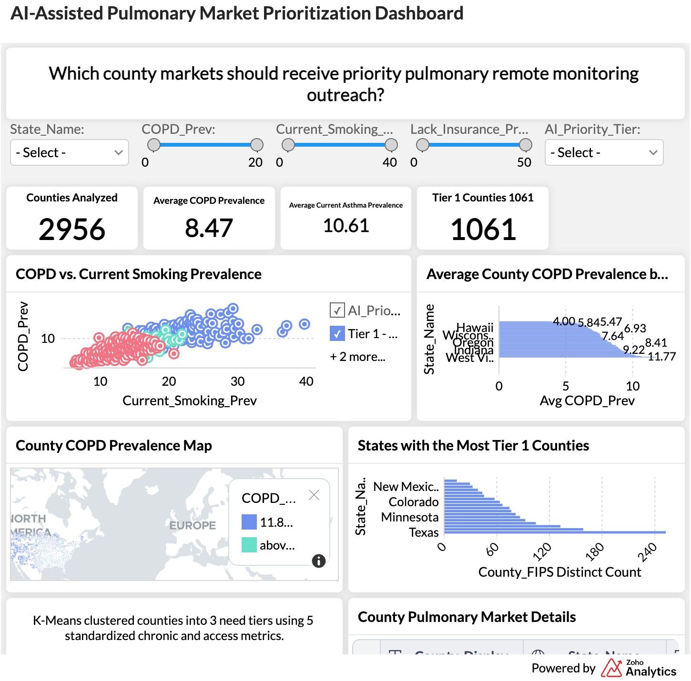

Dashboard Preview

Project Objective
This project evaluates county-level pulmonary health, behavioral-risk, and healthcare-access indicators. K-means clustering was used to group counties with similar profiles into three priority tiers for geographic market analysis and remote patient monitoring outreach.
Selected Indicators
COPD prevalence, current asthma prevalence, current smoking, lack of health insurance, and physical inactivity.
Tools and Methods
CDC PLACES 2025 · Data cleaning · Feature standardization · K-means clustering · Zoho Analytics · Geographic analysis